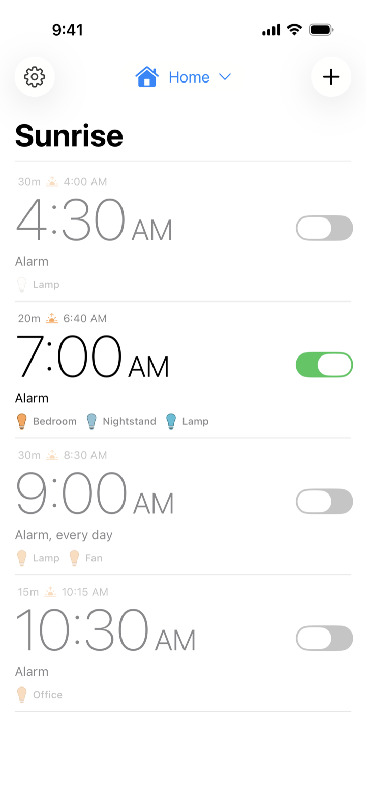

Wake up to light,
not an alarm
Sunrise Alarm gently wakes you with the smart lights you already own, and helps you wind down at night too. No new hardware, no clock to buy.

5:30 AM — First light
A Sunrise Before Your Alarm
A sunrise alarm gradually brightens your lights in the lead-up to your wake-up time, so you wake to a room that’s already getting lighter. It runs automatically on your scheduled days, all handled by Apple Home in the background.
Choose your wake-up time, how long the sunrise runs, and each light’s brightness and color.
6:00 AM — Awake, before the alarm
Light Your Whole Room, Morning and Night
Most sunrise lamps light one corner of the room. Sunrise Alarm works with the lights you already have, in any combination you like.
Any Number of Lights
Add as many lights as you like, and give each one its own Delay so the room fills with light gradually.
Brightness and Curve
Choose how bright each light gets, then pick a Curve to shape how it gets there: Natural, Organic, Dramatic, or Staircase.
Color and Temperature
Start in a deep red-orange and warm into clear daylight, just like a real sunrise. Pick a preset or build your own fade, with full-color lights or lights that shift from warm to cool white.
Lamps and Smart Plugs
Add a lamp that can’t dim, a fan, or anything else on a smart plug or outlet, and it’ll switch on or off as part of your alarm.
Windows, Blinds, and Shades
Control the position and tilt of windows, blinds, and shades alongside your lights, opening the room up as you wake or closing it down as you wind down.
Private by Design
Your alarm data stays entirely on your device and within Apple Home. No account, no cloud, no tracking.
Sunset Alarms New
Create a sunset alarm that gradually dims your lights to help you ease into sleep. Set any light to 0% and it’ll switch off at the end.
And at the other end of the day…
10:30 PM — Wind down · New
Let Your Lights Ease You to Sleep
A sunset alarm eases you toward sleep by slowly dimming your lights over however long you like. Choose when it starts and how long it runs, add your lights, and the app takes care of the rest.
Pick a Curve to shape the fade, and set any light to 0% so it switches off at the end.
2:00 AM — While you sleep
Once an alarm is created, it runs on its own through Apple Home automations on your Home hub, which can be a HomePod, Apple TV, or an iPad set up as a hub. It starts right on time even if your phone is off, dead, or across the house, and keeps working without an internet connection once it’s set up.
Works with Apple Home
If It’s in Apple Home, It Works
Sunrise Alarm controls the devices you’ve added to the Apple Home app, whatever the brand. If your lights are already there, you’re ready.
Getting started
Set Up in Minutes
If your lights are already in the Apple Home app, you’re almost done.
Add Your Lights to Apple Home
Make sure your lights show up in the Apple Home app. Any HomeKit-enabled light, smart plug, window, blind, or shade will work.
Download Sunrise Alarm
Install it from the App Store, then allow access to your Home data when the app asks.
Create Your First Alarm
Tap the “+” button, choose Sunrise or Sunset, then pick your time, your lights, and how long it runs.
Sleep, and Wake to Light
Your alarm runs on its own through Apple Home, so you can close the app and forget about it.
Pricing
Simple, Honest Pricing
Pay once and it’s yours, with no subscription required.
- Unlimited sunrise and sunset alarms
- Lights, smart plugs, windows, blinds, and shades
- No account required
- No data collected
Questions
Frequently Asked Questions
Do I need a Home hub?
Yes. Sunrise Alarm uses Apple Home automations, and Apple only runs those on a Home hub, which can be a HomePod, Apple TV, or an iPad set up as a hub. The hub runs your alarms locally, so they work even if your phone is asleep, off, or away. Apple has step-by-step instructions here.
Which devices work with Sunrise Alarm?
Any HomeKit-enabled light works, including full-color lights and lights that only change color temperature, from brands like Philips Hue, Nanoleaf, LIFX, Eve, and Meross. Smart plugs and outlets work too (on/off only), so a lamp on a smart plug can join in. Windows, blinds, and shades are supported as well, with control over position and tilt.
How do sunrise alarms work?
A sunrise alarm gradually brightens your lights in the lead-up to your wake-up time, so you wake to a room that’s already getting lighter. Pick Sunrise when you create the alarm, choose your wake-up time and how long the sunrise runs, then add your lights and set each one’s brightness and color. It runs automatically on the days you schedule.
How do sunset alarms work?
A sunset alarm eases you toward sleep by slowly dimming your lights over however long you like. Just pick Sunset when you create the alarm, choose when it starts and how long it runs, then add your lights. Set any light to 0% and it’ll switch off at the end.
Do I need to keep the app open?
No, you don’t. Once an alarm is created, it runs on its own through Apple Home automations, so you can close the app and forget about it.
Is this really a one-time purchase?
Yes. You pay $4.99 once on the App Store. There’s no subscription, and no in-app purchases are required.
Is it available on Android?
No. Sunrise Alarm is built just for iPhone and Apple Home, which lets it work closely with HomeKit and keep your alarm data on your device.
What data does the app collect?
None. Your alarm data stays entirely on your device and within Apple Home. The app only asks for access to your Home data and, optionally, permission to send notifications. Read the full privacy policy.
How do I get support?
Visit the support page or email Support@sunrisealarmapp.com. Every message gets read and answered personally.
Tomorrow morning could feel different
Set a sunrise alarm for the morning, and a sunset alarm for tonight. It only takes a few minutes.
Download on the App Store